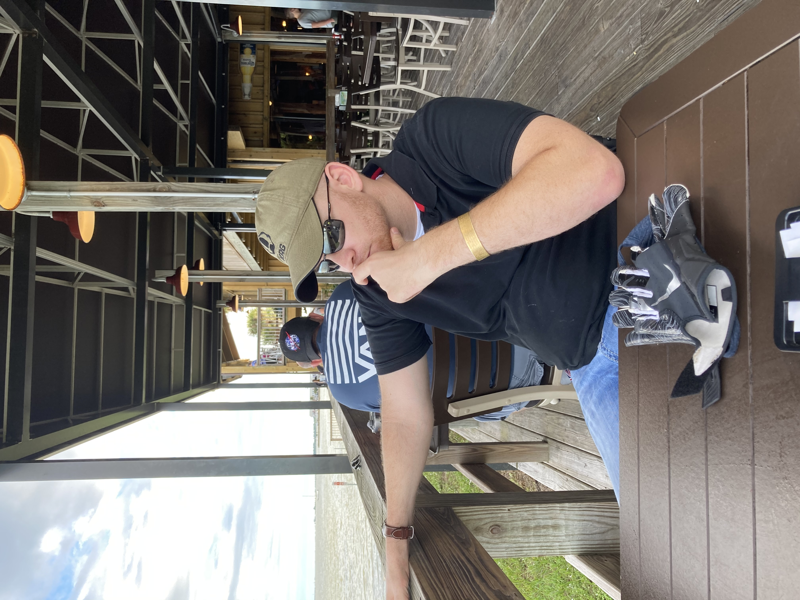

Find your next great vacation destination!
Purpose of This Assignment
The purpose of this assignment is to introduce students to the fundamental concepts of web development while emphasizing the importance of user-friendly interface design. As part of the ISM 6225 course, the project tasks us with creating a static, data-driven website that combines functionality, aesthetics, and interactivity. My theme, vacations, allows users to manage a wishlist of dream destinations, offering a simple yet engaging way to explore and plan future trips.
Beyond just building a website, this project focuses on mastering several key elements of web development, including effective navigation, data visualization, and responsive design. By working through these tasks, I am developing technical proficiency in modern web technologies while learning to think critically about how design choices impact user experience. Additionally, this assignment introduces deployment techniques, ensuring my work is accessible and properly managed using tools like GitHub. Ultimately, this project has been an invaluable exercise in building real-world technical skills that complement my business background, preparing me to create more impactful, data-driven solutions in the future.
Technologies Commonly Used by Developers
While not all will be used for this assignment, or even this class, there are many exciting technologies available to developers. I look forward to becoming more familiar with these technological assets in the future. I am including a short list here for your consideration.
- HTML (HyperText Markup Language)
- CSS (Cascading Style Sheets)
- JavaScript
- Python
- Java
- SQL (Structured Query Language)
- Node.js
- React.js
- Angular
- Git/GitHub

Check Out The Other Pages
About Me
Click on this section to learn more about me, my interests, and what I want to do in life!
Destination Wishlist
This interactive page allows you to create, update, and delete vacation destination data in a simple and user-friendly format. Use it to build your personalized travel wishlist, simulating a typical CRUD (Create, Read, Update, Delete) interface. It's a hands-on tool for organizing your top destinations, perfect for travel enthusiasts who want an easy way to log and view their dream vacation spots.
Vacation Analytics
Our Data Analytics page offers a visual representation of vacation trends using D3.js. Here, you'll find graphs showcasing the best seasons for travel and the most preferred locations around the world. This page makes data engaging and accessible, perfect for users who want to explore which destinations are trending and plan their next adventure accordingly.